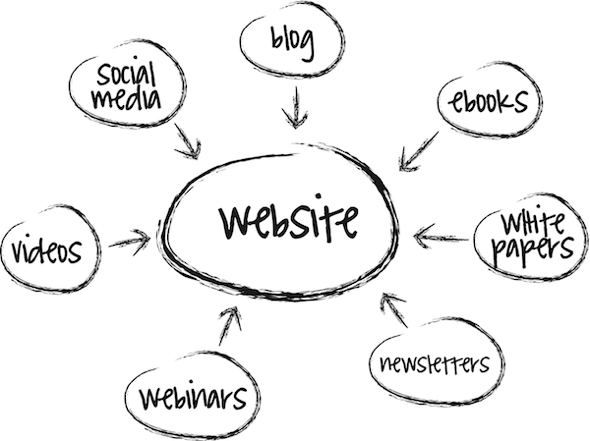

What is Owned Media?
Owned media is the content that your brand has complete control over, such as your company website and blogs, online communities, physical and email newsletters, as well social media channels like Facebook, Twitter, LinkedIn, and YouTube. Owned media initiatives primarily target your company's existing community and/or current customers. The thrust is to build for longer-term relationships, and generate postive online content from customers themselves.
What are the Benefits?
The greatest advantages to owned media are the complete control you have over the message, and cost efficiency. By providing opportunities for engagement with your audience, you have the ability to direct the conversation in a positive way. This can also help establish expertise and trust, and provides tremendous versatility when targeting niche audiences.
What are the Challenges?
Many believe that owned media is free, specifically when it comes to using social media. While there is some truth to that, the time and labor investment is worth noting. It takes a lot of time to create content, build a thriving community and value to the customer conversation. You also have to consider the time it takes to plan and collaborate with other team members, and how to prepare for crisis communication. Owned media may seem free, but time is money. Also, there are no guarantees your efforts will work, because often people are skeptical of straight company communication.
How Can You Leverage It?
The most important thing to remember with owned media is that, even though you control the content, you don't necessarily control the conversation. Engagement with your customers is paramount. People want to do business with those they know, like and trust, and always want to know, "What's in it for me?" Some key considerations:
- Are you communicating a consistant message across all channels?
- Do you demonstrate how your product or service meets your customer's needs and desires?
- Are you committed to spending the necessary resources in time, energy and money into creating great content?
- Do you have a mechanism to listen and engage with your audience?
Bottom line? Don't just talk about your latest product or service; identify with your customer's problems and show how you solve them.
(Sources: Forrester Research and Hootsuite)